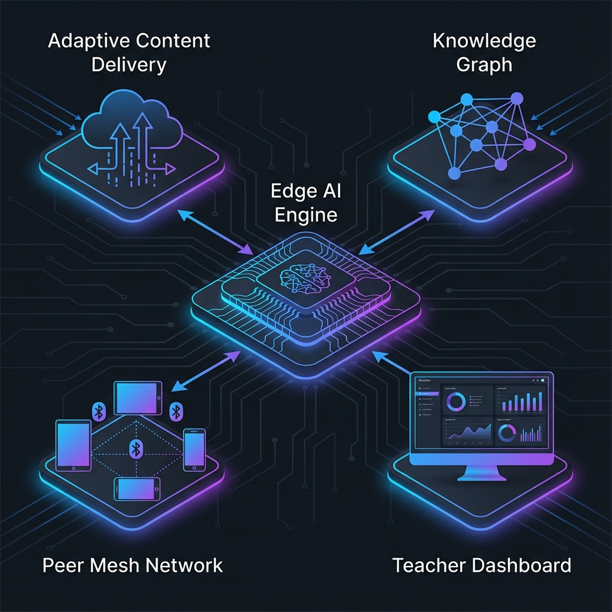

8 UAS-3 My Innovations
EduBridge AI: Sistem Pembelajaran Adaptif Berbasis Edge Computing

8.1 Latar Belakang
Berdasarkan konsep EduBridge dan opini saya tentang pendidikan inklusif, saya mengembangkan inovasi teknis bernama EduBridge AI - sebuah sistem pembelajaran adaptif yang dapat berjalan di perangkat dengan spesifikasi rendah tanpa ketergantungan pada koneksi internet.
8.2 Arsitektur Sistem
EduBridge AI terdiri dari lima komponen utama yang terintegrasi:
8.2.1 1. Edge AI Engine (EAE)
Ini adalah jantung dari sistem - model AI ringan yang berjalan langsung di perangkat pengguna.
Spesifikasi: - Menggunakan model TinyML dengan ukuran < 50MB - Berjalan di perangkat Android dengan RAM minimal 1GB - Tidak membutuhkan koneksi internet untuk inferensi dasar
Fungsi: - Menganalisis pola belajar siswa secara real-time - Menyesuaikan tingkat kesulitan materi - Memberikan feedback instan tanpa latency jaringan
8.2.2 2. Adaptive Content Delivery System (ACDS)
Sistem pengiriman konten yang cerdas berdasarkan kondisi jaringan:
| Kondisi Jaringan | Mode Pengiriman |
|---|---|
| Tidak ada koneksi | Konten offline yang sudah di-cache |
| Koneksi lambat (2G/3G) | Teks + audio, tanpa video |
| Koneksi sedang (4G) | Video terkompresi + interaktif |
| Koneksi cepat (WiFi) | Full experience dengan kolaborasi real-time |
8.2.3 3. Knowledge Graph Lokal (KGL)
Setiap perangkat memiliki knowledge graph mini yang memetakan: - Konsep yang sudah dikuasai siswa - Konsep yang masih lemah - Jalur pembelajaran optimal
Knowledge graph ini di-sinkronisasi ke cloud ketika tersedia koneksi, memungkinkan guru untuk memantau progress.
8.2.4 4. Peer Mesh Network (PMN)
Ketika berada di area tanpa internet tapi dengan beberapa pengguna: - Perangkat membentuk jaringan mesh via Bluetooth/WiFi Direct - Siswa bisa berbagi konten dan belajar bersama - Progress tetap tersinkronisasi dalam kelompok
8.2.5 5. Teacher Dashboard (TD)
Interface untuk guru yang menampilkan: - Progress agregat seluruh kelas - Identifikasi siswa yang membutuhkan bantuan ekstra - Rekomendasi materi yang perlu diulang secara klasikal
8.3 Inovasi Kunci
Yang membedakan EduBridge AI dari solusi EdTech lainnya:
- AI-First, Cloud-Second - AI berjalan lokal, cloud hanya untuk sinkronisasi
- Progressive Enhancement - Pengalaman meningkat sesuai kemampuan perangkat dan jaringan
- Community-Centric - Peer mesh network membuat pembelajaran tetap sosial walau offline
- Teacher-Augmented - Guru diperkuat dengan insight, bukan digantikan
8.4 Teknologi yang Digunakan
- TensorFlow Lite / ONNX Runtime untuk model AI ringan
- SQLite + Room untuk penyimpanan lokal
- Nearby Connections API untuk peer mesh
- Flutter untuk cross-platform development
- Firebase untuk sinkronisasi ketika online
8.5 Dampak yang Diharapkan
Dengan EduBridge AI, seorang siswa di desa terpencil dengan smartphone Android bekas dan tanpa internet tetap dapat: - Belajar dengan kurikulum yang sama dengan siswa kota - Mendapat personalisasi yang sama berdasarkan kemampuannya - Berkolaborasi dengan teman-teman sekitarnya - Terpantau progressnya oleh guru
Inilah demokratisasi pendidikan yang sebenarnya - bukan memberikan link ke siswa, tapi memberikan seluruh pengalaman belajar.